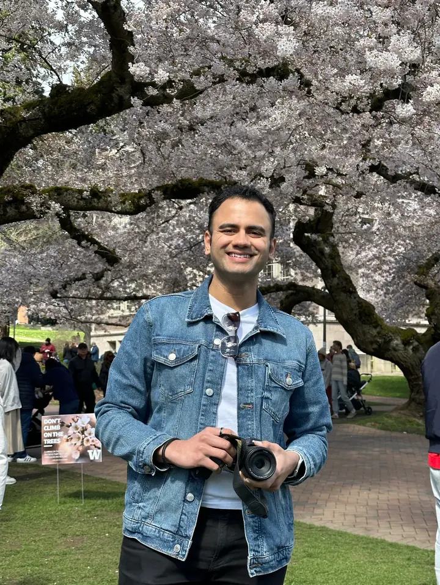
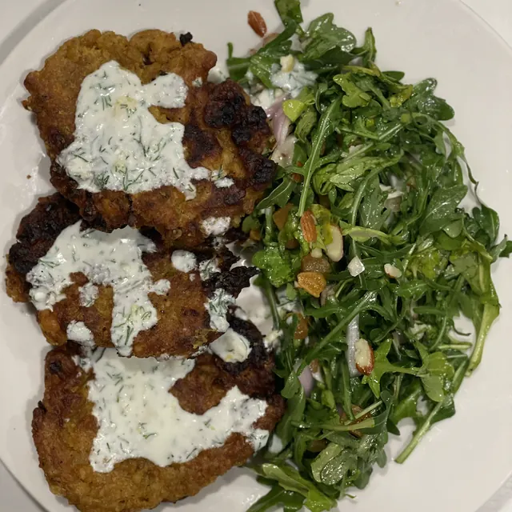
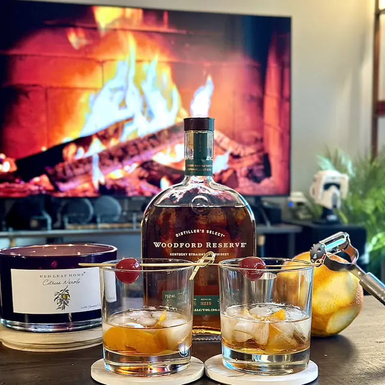
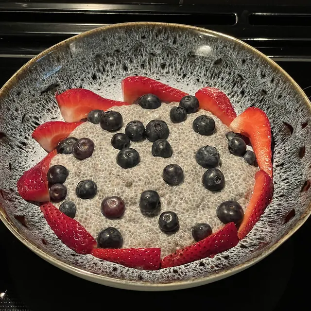
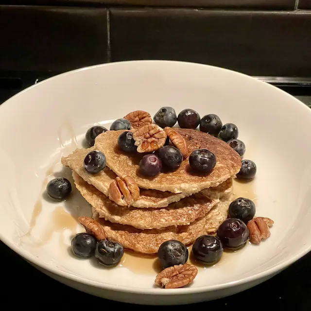
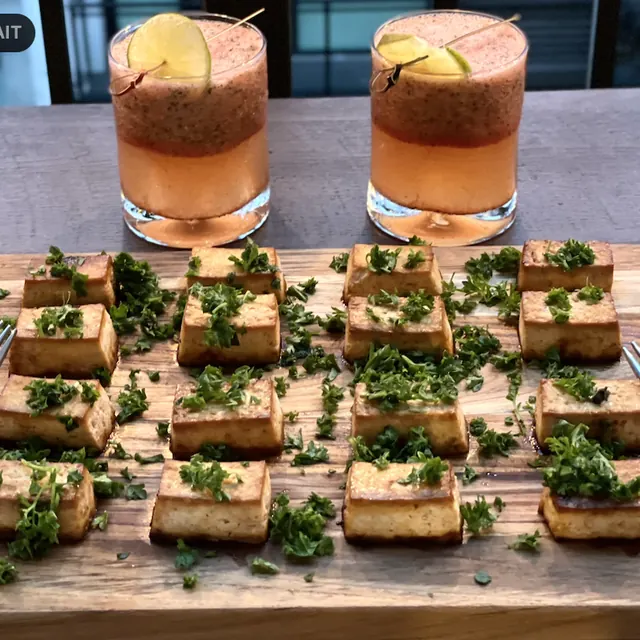
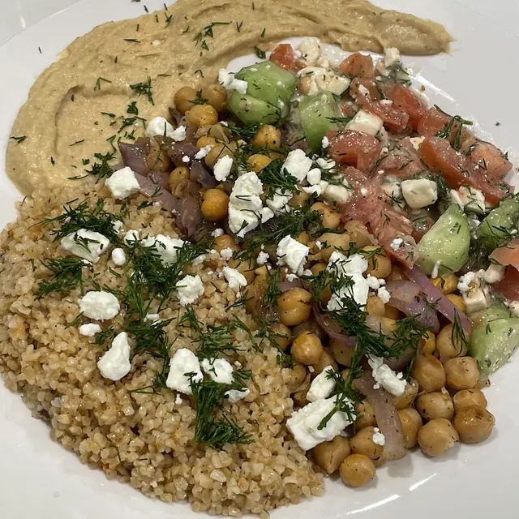

MBA, 2026
Kellogg School of Management
Northwestern University. Marketing, Finance and Technology Management.
Dean's List
- VP of Alumni Relations, Kellogg Student Association
- Co-chair, Entrepreneurship Conference
- Admissions Interviewer
Product-minded operator turning ambiguous AI, customer experience, and growth problems into structured product and GTM systems.
Currently leading Merchant Product & Experience at DoorDash, shaping product investments, new revenue opportunities, and competitive differentiation. Kellogg MBA with experience across fintech, executive search, venture, and AI-enabled products.

Things I've built, written and taught. Open any line for the detail.
Relationship tracking is stuck inside enterprise CRMs built for sales pipelines, not human context.
A lightweight CRM for relationships, context, notes and follow-ups, without the bloat.
Open OrbitCRM ↗Most conversation games stay surface-level or get intense too fast, and the physical deck is never there when you want it.
A mobile-first prompt game with curated modes, privacy controls, prompt memory, and multiplayer rooms that keep everyone on the same card across devices.
Play Say It Anyway ↗Co-authored with Venkat Atluri, Senior Partner at McKinsey, and Tom O'Toole, former CMO of United and President of MileagePlus. How AI could reshape loyalty, personalization and customer engagement, and what that means for platform-led growth.
Read the paper ↗Brought prototyping, UGC analysis and milestone-based execution into the course, so students go from idea to insight to prototype to go-to-market plan inside one quarter.
View the course ↗Essays on AI, growth, product judgment, and the operating habits behind compounding improvement.
Read on Substack ↗Fintech, mobility, marketplaces and executive search.
Manager, Strategy & Operations: Merchant Product, Experience & Growth
Leading the Merchant Product & Experience team, shaping merchant product investments and driving new revenue opportunities and competitive differentiation. Also overseeing merchant support, claims and refunds, and quality improvement initiatives that drive retention and growth.
Program Manager MBA Intern, AI CX & Product Ops
Defined AI-driven support journey improvements and contributed to the 2026 omnichannel roadmap for 9M+ members.
Product and Growth Consultant, Uber Shuttles
Diagnosed B2B shuttle adoption funnels and designed loyalty MVPs to lift corporate rider activation.
Product Manager MBA Intern
Sized adjacent markets and scoped MVP concepts for a senior living SaaS platform.
Associate II, GTM Strategy & Market Intelligence
Analyst, then Associate I, then Associate II. Promoted twice in 15 months.
Built scalable commercial systems and led global C-suite product and engineering searches for venture- and PE-backed companies.
C-suite and VP-level executive search for venture-backed, PE-backed and enterprise clients.
Revenue Operations Analyst
Improved go-to-market visibility and revenue tracking for an enterprise learning SaaS platform.
MBA, 2026
Northwestern University. Marketing, Finance and Technology Management.
Dean's List
BA
Economics and Psychology, with a concentration in Accounting.
Tools: SQL, Python, Snowflake, Excel and Figma day to day. Replit, Lovable, n8n and Claude to prototype. Languages: English, Hindi and Indonesian, plus intermediate French.
Verbatim, from performance reviews and colleagues. Pick a theme to read the full quote.
You “punch above your weight class.” I love how eager you are to jump in and challenge yourself. Your work supporting our sales process, leading it, but also dealing with radically different opinions and approaches is really impressive. You go with the flow when that's the right call, and then educate your colleagues when you need people to follow your lead. It's a difficult balance to strike and you do it with grace.
You have incredible talents and think like an investor. I am grateful for all that you put into Parker Remick and supporting others so much. You are a gifted person in your communication, your analytical skills, and your presentation. You help other people first and yourself last. Thank you for being a great colleague and friend.
Uddhav's ability to identify, scope, and action on an improvement opportunity is incredible. Since jumping into more formally supporting our BD efforts, Uddhav has elevated our GTM capabilities in multiple ways.
Uddhav is a machine. He's so productive and efficient. He's so capable across many dimensions. He's made material contributions to our BD effort. He gets this business. I foresee him making great strides in the coming year. I appreciate seeing him get better at his craft.
The way you handle pressure and maintain a calm demeanor is impressive. It sets a great example for the rest of us!
Uddhav strikes the perfect balance between work-serious and sociable-fun. He'll bring the productive, polished, work focus, and also the on-the-mark jokes and stories to keep it fun. The best energy: having fun, and getting it done.
A camera since age eleven, piano since seven.
10 cities called home, 22 countries and 30 US states visited, 1,000+ restaurants reviewed on Beli. The search for the best coffee in each one is still open.


Cooked by me, mostly from scratch.






Happy to talk product strategy, growth, loyalty, or how AI is changing merchant and customer experiences.
Say hello on LinkedIn